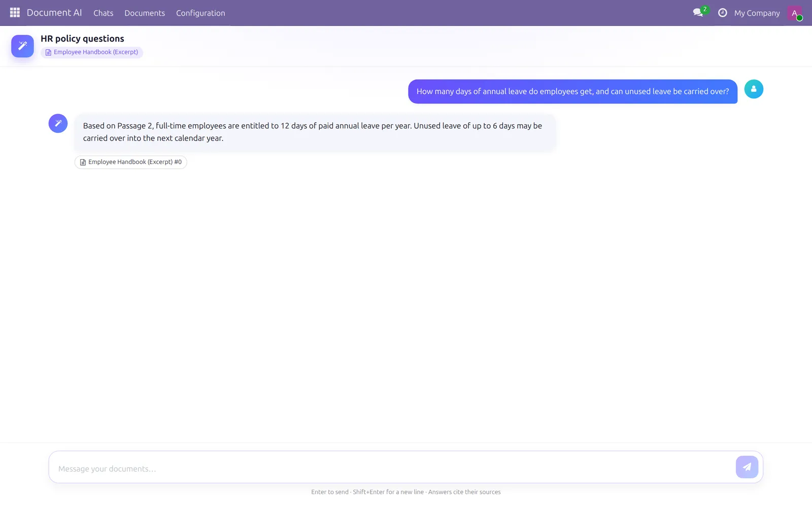
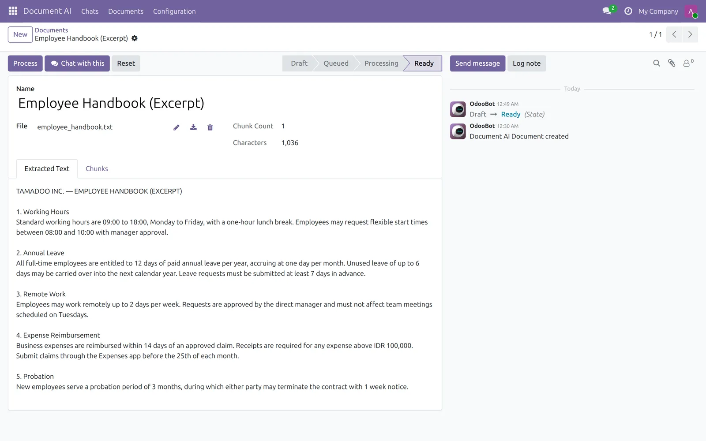
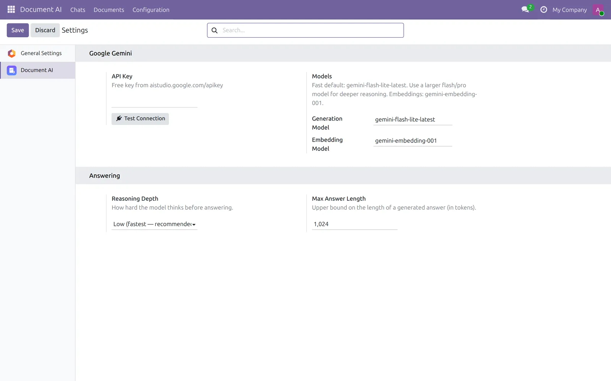
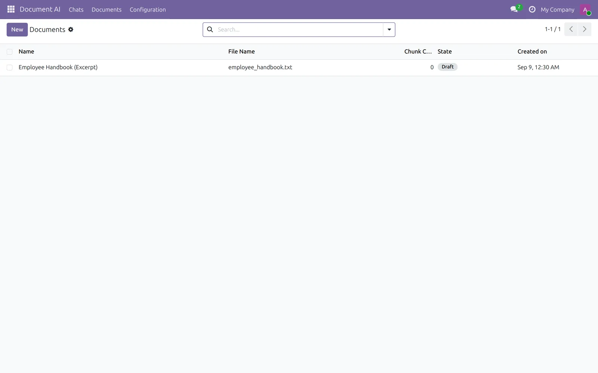
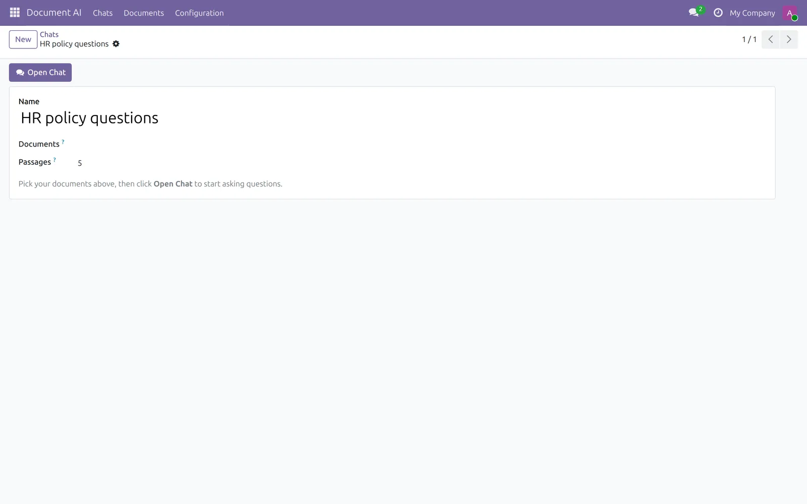

Document AI - Chat with Documents and Cited Sources
AI chat with documents: ask your PDF, DOCX and TXT files and get answers grounded in them, with the source passages cited (RAG with Google Gemini).
- Price
- $49
- Odoo versions
- 16.0
- 17.0
- 18.0
- 19.0
- 20.0
- Technical name
tamadoo_document_ai- License
- OPL-1
Odoo 20.0: not listed on the store yet. Ask at tama.odoo@gmail.com.

Text and screenshots below are from the Odoo 20.0 version of this module.
Chat with your PDFs, DOCX and TXT files. Every answer is grounded in your documents — and shows the exact passages it used.

Why teams love it
Answers you can trust
Every reply cites the passages it used. If the answer isn't in your documents, it says so — no invented facts.
Zero infrastructure
No vector database, no extra services. Semantic search runs inside Odoo. Add a free Gemini key and go.
Private by design
Each user's chats are visible only to that user, enforced by a record rule. Uploads process in the background.
Model-agnostic
Gemini by default, behind a pluggable provider layer. A different model (OpenAI, local Ollama…) is one small file away.
How it works
Extract
PDF / DOCX / TXT → plain text.
Chunk & embed
Split into passages, turn each into a vector.
Retrieve
Rank passages by similarity to your question.
Answer
Stream a grounded answer with its sources.
A closer look
Upload & process a document
Upload a file and click Process. It moves Draft → Queued → Processing → Ready. Extracted text and chunks are visible for full transparency.

Simple, powerful settings
One free Gemini key with a Test Connection button, model choice, reasoning depth and answer-length controls.

Organise documents & chats


Set up in 2 minutes
- Install the module.
- Get a free Gemini key at aistudio.google.com/apikey.
- Settings → Document AI → paste the key → Test Connection.
- Documents → New → upload a file → Process.
- Chats → New → pick your document(s) → Open Chat → ask away.
Requirements: Odoo 20.0. For PDF / DOCX, install pypdf
and python-docx on the Odoo server (TXT / MD / CSV need nothing extra).
Get Document AI
Odoo 20.0: not listed on the store yet. Ask at tama.odoo@gmail.com.
Questions before buying? Write to tama.odoo@gmail.com.